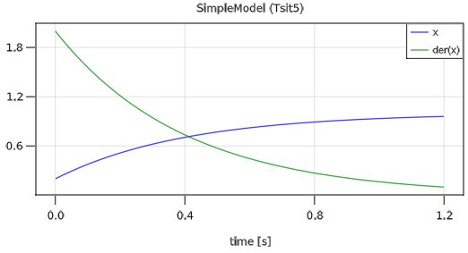

1 Getting started
This tutorial gives an overview of package Modia to construct component-based and equation-based models with the Modia language on a high level, symbolically transforming these models into ODEs (Ordinary Differential Equations in state space form), simulating them and plotting result variables.
All examples in this tutorial can be executed with
using Modia; include("$(Modia.path)/examples/Tutorial.jl")
A simple differential equation with $x(t) \in \R$
\[T \cdot \frac{dx}{dt} + x = 1; \;\;\; x(t_0) = 0.2\]
can be defined, simulated and plotted with the following commands:
using Modia, ModiaPlot
# Define model
SimpleModel = Model(
T = 0.4,
x = Var(init=0.2),
equation = :[T * der(x) + x = 1],
)
# Transform to ODE form
simpleModel = @instantiateModel(SimpleModel)
# Simulate with a default integrator of DifferentialEquations
simulate!(simpleModel, stopTime = 1.2)
# Simulate with a specific integrator (Tsit5) and use a unit for stopTime
simulate!(simpleModel, Tsit5(), stopTime = 1.2u"s")
# Produce a line plot with GLMakie
plot(simpleModel, ("x", "der(x)"), figure=1)A model is defined with a constructor Model taking a comma separated list of name/value pairs. The model consist of a definition of a parameter T with default value 0.2. Constructor Var with an init key is used to define the initial condition 0.2 of the state x, and one equation. Equations can have a Julia expression on both sides of the equal sign and are given as a quoted array expression :[ ] assigned to a unique identifier such as equation.
Macro @instantiateModel(..) symbolically processes the model, in particular solves the equation for the derivative der(x), so the following equation will be used by the integrator:
\[\frac{dx}{dt} = (1 - x) / T\]
Furthermore, a Julia function is generated and compiled to evaluate this equation. @instantiateModel(..) returns an instance containing all the information needed for the further steps.
The first simulate! function performs one simulation with an integrator of package DifferentialEquations.jl, that this package automatically selects. The second simulate! call defines the integrator as second argument. Integrator Tsit5 is an adaptive Runge-Kutta method of order 5/4 from Tsitouras. There are > 100 ODE integrators provided. For details, see here. The simulation result is stored inside simpleModel.
Function call plot(..) (or ModiaPlot.plot(..)) produces a line plot. Variables to be plotted are defined as tuples or arrays of variable names. Tuples are displayed in one diagram. A Vector or matrix of tuples or strings are displayed as vector or matrix of diagrams. The result from the above example is:

using Modia exports all exported symbols from